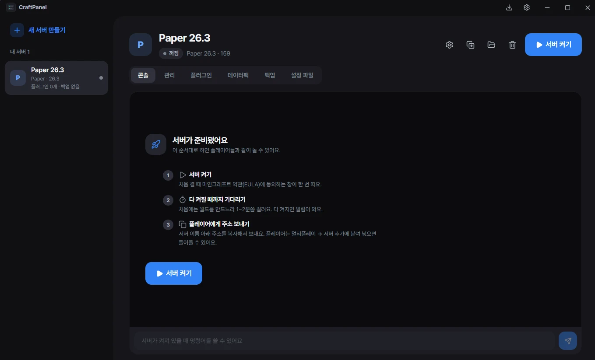

친구들과 놀 마인크래프트 서버,
클릭 몇 번이면 끝
명령어도, 설정 파일도 몰라도 돼요. 서버 만들기부터 모드·모드팩 설치, 백업, 튕김 원인 찾기까지 한 앱에서 해요.
윈도우용 무료 다운로드
이런 걸 할 수 있어요
복잡한 건 앱이 알아서 하고, 고를 것만 물어봐요.
서버 만들기
바닐라, Paper, Fabric, Forge, NeoForge, Quilt, Purpur. 버전만 고르면 자바까지 알아서 받아요.
모드 · 모드팩
Modrinth와 CurseForge를 한 번에 검색하고 설치해요. 필요한 모드도 같이 깔고, 서버 팩도 알아서 써요.
서버에 안 맞는 모드 찾기
게임 화면 전용 모드나 빠진 모드, 같은 모드 두 개를 켜기 전에 미리 알려 줘요.
튕김 원인 분석
서버가 튕기면 긴 오류 대신 무엇 때문인지 알기 쉽게 알려 줘요.
백업 · 되돌리기
켜기 전 자동 백업, 정기 백업. 한 번 눌러 되돌리고, 되돌리기 전 월드도 따로 남겨 둬요.
관리 · 자동화
OP·밴·화이트리스트, 게임 규칙, 맵 가져오기. 매일 다시 켜기, 빈 서버 끄기, 환영 메시지도요.
설치 방법
3분이면 첫 서버를 켤 수 있어요.
자주 묻는 질문
정말 무료예요?
네. 광고도, 유료 기능도 없어요.
컴퓨터 사양은 얼마나 필요해요?
Windows 10·11 64비트, 메모리 8GB 이상을 추천해요. 모드가 많은 서버는 16GB가 편해요.
"Windows의 PC 보호" 창이 떠요. 괜찮아요?
괜찮아요. 코드 서명 인증서가 없는 개인 앱이라 뜨는 창이에요. 추가 정보 → 실행을 누르면 돼요. 앱의 코드는 깃허브에 모두 공개돼 있어요.
친구가 들어오지 못해요.
서버 이름 아래 접속 주소 옆의 확인 버튼(밖에서 접속되는지 확인)을 눌러 보세요. 공유기가 자동 포트 열기(UPnP)를 막아 두었으면 공유기 설정에서 서버 포트(기본 25565)를 직접 열어야 해요.
만든 서버는 어디에 저장돼요?
내 컴퓨터에 저장돼요 (%APPDATA%\mc-server-manager). 앱을 지워도 서버와 백업은 남아요.